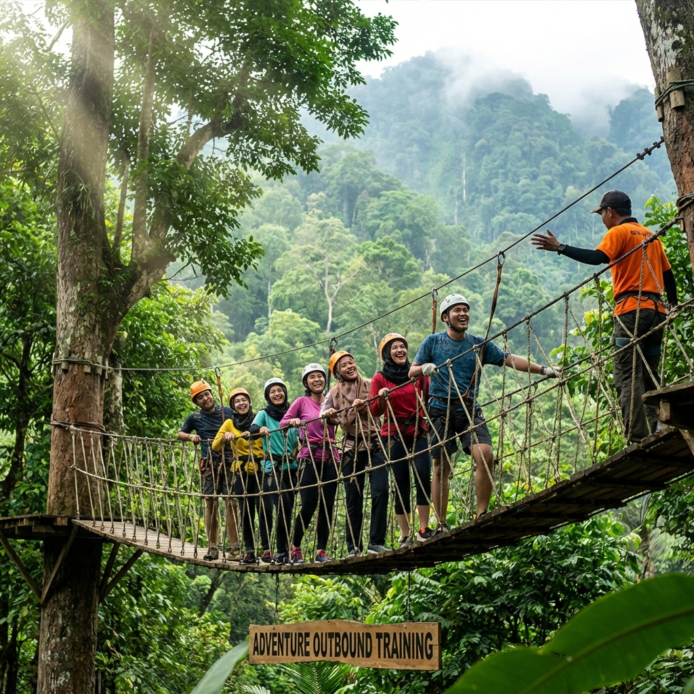

Daftar Isi
Membangun kekompakan tim merupakan salah satu tantangan terbesar yang dihadapi oleh setiap pemimpin dan organisasi. Tim yang kompak dan solid tidak terbentuk secara instan, melainkan melalui proses yang konsisten dan terencana. Salah satu cara paling efektif untuk mempercepat proses pembentukan tim yang solid adalah melalui aktivitas team building yang dirancang secara khusus dan profesional.
Dalam artikel ini, kami akan membahas 15 aktivitas team building paling seru dan terbukti efektif yang sering digunakan dalam program outbound leadership training Gemilang Adventure di kawasan Batu Malang. Setiap aktivitas dirancang dengan tujuan pembelajaran yang spesifik dan dapat diadaptasi sesuai dengan karakteristik dan kebutuhan tim Anda.
Aktivitas Team Building Outdoor
1. Trust Fall
Trust fall adalah aktivitas klasik namun sangat powerful dalam membangun kepercayaan antar anggota tim. Peserta berdiri di platform setinggi 1-1,5 meter dengan posisi membelakangi rekan-rekan timnya, kemudian menjatuhkan diri ke belakang dengan percaya bahwa tim akan menangkapnya. Aktivitas ini mengajarkan bahwa kepercayaan adalah fondasi dari sebuah tim yang kuat dan efektif.
Manfaat utama dari trust fall meliputi peningkatan rasa percaya, pengembangan keberanian, dan penguatan bonding emosional antar anggota tim. Setelah aktivitas ini, biasanya peserta merasa lebih terbuka dan nyaman dalam berkomunikasi dengan rekan-rekan satu timnya.
2. Spider Web (Jaring Laba-Laba)
Spider web menggunakan tali yang dirangkai menyerupai jaring laba-laba di antara dua tiang. Tim harus melewatkan seluruh anggotanya melalui lubang-lubang jaring tanpa menyentuh tali. Setiap lubang hanya bisa digunakan satu kali, sehingga tim harus menyusun strategi yang matang tentang urutan dan teknik yang akan digunakan. Aktivitas ini melatih perencanaan strategis, komunikasi, dan kerja sama tim secara intensif.
3. Flying Fox
Flying fox atau zipline adalah aktivitas adrenalin yang mengharuskan peserta meluncur di tali baja dari ketinggian melintasi lembah atau area terbuka. Aktivitas ini menguji keberanian dan mental peserta, mengajarkan bahwa seorang pemimpin harus berani mengambil langkah pertama dan menjadi contoh bagi timnya. Di Batu Malang, flying fox biasanya melewati pemandangan alam yang sangat indah.
Baca Juga
→ 10 Manfaat Leadership Training untuk Karyawan Perusahaan → Panduan Lengkap Outbound Leadership Training di Batu Malang4. Rafting (Arung Jeram)
Rafting merupakan aktivitas adventure yang sangat populer di kawasan Batu Malang. Tim harus bekerja sama mengendalikan perahu karet melewati jeram-jeram sungai. Setiap anggota harus mendayung secara sinkron mengikuti instruksi komando yang memimpin. Aktivitas ini melatih koordinasi tim, kemampuan mengikuti instruksi, dan bekerja di bawah tekanan situasi yang dinamis.
5. Wall Climbing
Wall climbing atau panjat tebing melatih mental, fisik, dan kepercayaan antar anggota tim. Satu orang memanjat sementara rekan timnya memegang tali pengaman di bawah. Aktivitas ini mengajarkan bahwa di balik setiap orang yang sukses, ada tim yang mendukung dan menjaga keselamatannya. Peserta belajar tentang tanggung jawab, kepercayaan, dan pentingnya saling mendukung.

6. Pipeline Challenge
Setiap anggota tim memegang satu potongan pipa setengah lingkaran. Bola harus dialirkan dari satu ujung ke ujung lain melalui rangkaian pipa yang dipegang oleh seluruh anggota tim tanpa jatuh. Jika bola jatuh, harus diulang dari awal. Games ini melatih kesabaran, koordinasi, komunikasi, dan fokus yang tinggi dari setiap anggota tim.
7. Minefield (Ladang Ranjau)
Area lapangan ditaburi berbagai benda yang menjadi "ranjau". Seorang peserta harus melewati area tersebut dengan mata tertutup, dipandu hanya oleh instruksi verbal dari rekan timnya. Aktivitas ini meningkatkan kemampuan memberikan instruksi yang jelas, mendengarkan secara aktif, serta membangun kepercayaan yang mendalam antara pemberi instruksi dan pelaksana.
8. Paintball War
Paintball adalah aktivitas seru yang menggabungkan strategi militer dengan keseruan bermain. Tim harus menyusun strategi penyerangan dan pertahanan, mengoordinasikan pergerakan anggota, dan mengambil keputusan taktis secara cepat. Selain melatih kerja sama dan strategi, paintball juga menjadi sarana melepas stres yang sangat efektif dan menyenangkan.
"Kekuatan sebuah tim tidak terletak pada individu yang paling kuat, melainkan pada kebersamaan dan saling mendukung di antara seluruh anggotanya. Itulah esensi dari team building yang sesungguhnya."
Aktivitas Team Building Low Impact
9. Egg Drop Challenge
Tim diberikan bahan-bahan terbatas seperti sedotan, selotip, koran, dan balon untuk membuat alat pelindung telur. Telur kemudian dijatuhkan dari ketinggian tertentu dan tim yang telurnya selamat menjadi pemenang. Aktivitas ini melatih kreativitas, inovasi, dan kemampuan bekerja dengan sumber daya yang terbatas – keterampilan yang sangat relevan di dunia bisnis.
10. Human Knot
Seluruh anggota tim berdiri membentuk lingkaran, lalu saling memegang tangan anggota lain yang bukan di sebelahnya. Tim harus melepaskan simpul manusia ini tanpa melepas genggaman tangan. Games ini melatih problem solving, komunikasi, dan fleksibilitas. Peserta harus bekerja sama, berkompromi, dan berkomunikasi dengan efektif untuk menyelesaikan tantangan ini.
11. Blind Leader
Seorang leader ditutup matanya dan harus mengarahkan timnya menyelesaikan sebuah tugas berdasarkan informasi yang diberikan oleh anggota tim. Aktivitas ini mengajarkan bahwa seorang pemimpin tidak selalu memiliki semua jawaban dan perlu mendengarkan serta mempercayai masukan dari timnya untuk mengambil keputusan yang tepat.
_11zon.webp)
Aktivitas Team Building Kreatif
12. Raft Building
Tim diberi bahan-bahan seperti drum, bambu, dan tali untuk membangun rakit yang dapat mengapung dan ditumpangi. Setelah selesai, tim harus berlomba menggunakan rakit buatan mereka di kolam atau danau. Aktivitas ini menggabungkan kreativitas, engineering, dan kerja sama tim dalam konteks yang sangat menyenangkan dan menantang.
13. Cooking Challenge
Tim berkompetisi memasak menu tertentu dengan bahan dan waktu yang terbatas. Aktivitas ini melatih pembagian tugas, manajemen waktu, kreativitas, dan kerja sama dalam tekanan deadline. Selain itu, memasak bersama menciptakan bonding yang unik karena melibatkan aktivitas yang berbeda dari pekerjaan sehari-hari di kantor.
14. Amazing Race
Terinspirasi dari acara TV populer, amazing race mengharuskan tim berlomba menyelesaikan serangkaian tantangan di berbagai pos yang tersebar di area outbound. Setiap pos memiliki tantangan berbeda yang menguji berbagai aspek kerja sama tim. Aktivitas ini sangat dinamis dan memberikan sensasi kompetisi yang sehat dan menyenangkan bagi semua peserta.
15. Campfire Sharing Session
Sesi ini biasanya dilakukan di malam hari dalam program 2 hari 1 malam. Tim berkumpul di sekitar api unggun untuk berbagi cerita, pengalaman, dan refleksi. Suasana hangat dan intim dari campfire menciptakan ruang yang aman bagi peserta untuk lebih terbuka dan jujur. Fasilitator akan memandu sesi ini untuk mengeksplorasi nilai-nilai team, harapan, dan komitmen bersama ke depan.

Tips agar Team Building Sukses dan Berkesan
Agar aktivitas team building memberikan dampak yang maksimal dan berkesan, perhatikan beberapa tips berikut ini:
- Tentukan tujuan yang jelas – Setiap aktivitas harus memiliki learning objective yang spesifik dan terukur.
- Pilih aktivitas yang sesuai – Sesuaikan tingkat kesulitan dengan kemampuan dan karakteristik peserta.
- Sertakan debriefing – Sesi refleksi setelah setiap aktivitas sangat penting untuk menginternalisasi pelajaran.
- Ciptakan suasana yang menyenangkan – Team building harus seru, bukan menjadi beban tambahan bagi peserta.
- Libatkan semua peserta – Pastikan setiap orang mendapat kesempatan berpartisipasi secara aktif.
- Gunakan fasilitator profesional – Fasilitator berpengalaman memastikan program berjalan sesuai rencana.
Kesimpulan
Aktivitas team building yang tepat dan terencana dengan baik dapat menjadi katalis yang powerful dalam membangun kekompakan dan solidaritas tim. Dari 15 aktivitas yang telah dibahas, Anda dapat memilih kombinasi yang paling sesuai dengan kebutuhan dan karakteristik tim Anda. Yang terpenting, pastikan setiap aktivitas dilakukan dengan tujuan yang jelas dan diakhiri dengan refleksi yang mendalam.
Gemilang Adventure siap membantu Anda merancang program team building yang seru, bermakna, dan berdampak positif bagi kekompakan tim perusahaan Anda di kawasan indah Batu Malang. Hubungi kami sekarang untuk konsultasi gratis dan penawaran terbaik!
Booking Team Building SekarangFAQ

Artikel Terkait

Panduan Lengkap Outbound Leadership Training di Batu Malang
Semua yang perlu Anda ketahui tentang outbound leadership training.
Baca Selengkapnya
10 Manfaat Leadership Training untuk Karyawan
Temukan manfaat utama leadership training.
Baca Selengkapnya
Rekomendasi Lokasi Outbound Terbaik di Batu Malang
Lokasi outbound terbaik di kawasan Batu Malang.
Baca Selengkapnya